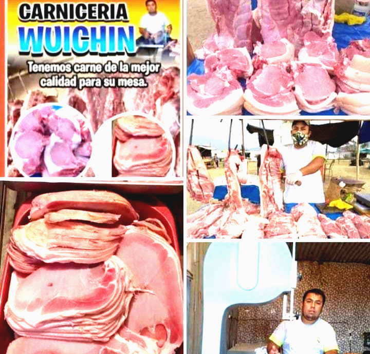

En 2019, se comenzó a desarrollar esta mini empresa, con el fin de hacer frente a la problemática a nivel mundial sobre la pandemia. Siendo, un grupo de integrantes de familia, que nos ayudamos mutuamente en este trabajo, buscando la manera de salir adelante. Es por ello, que mediante este negocio, nos dedicamos a la compra y venta de diferentes tipos de carnes. Con el objetivo de tener excelentes productos de buena calidad para los clientes, como servicios para el bienester del público. Algunos de nuestros productos son:
• Carne de Cerdo
• Carne para Parrilla
• Chuleta
• Pata de Res
• Mondongo
• Relleno, etc
